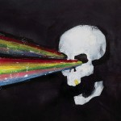
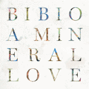
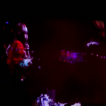
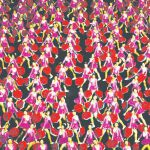
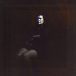
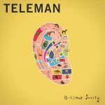
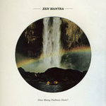

Quick Takes (April 2016)
Our latest installment of Quick Takes may be up a little bit later than usual, but bear with us - with so many surprise releases, from Radiohead to James Blake to Drake, we've been just as overwhelmed as all of you trying to keep up. But that doesn't stop us from acknowledging some records that we just needed to get off our chests, both the great and the not so great. I was pleasantly surprised with Deakin's long-gestated Sleep Cycle, which is, in my humble opinion, the best Animal Collective offshoot project since Panda Bear's Person Pitch. Carl, on the other hand, really enjoyed that Greys record, which I'm not that much of a fan of, but we were both equally underwhelmed with Suuns' sophomore effort. What were your favorite records during the month of April? Anything we didn't get to review on our site that we should've? You can always reach us on facebook, or our official twitter page. Seriously, give us a shout. We love talking about music. - Juan
....
Autolux
Pussy’s Dead
(30th Century Records)
Autolux always like to take their time, a quality that’s actually pretty daring considering they’ve never been exactly on most people’s radar. But what makes the elusive LA-based outfit so unique is that despite the long wait in between albums, they always find a way to reinvent themselves as if starting from scratch. It helps that they honed a very unique identify from the get-go, merging the conventional (alterna-metal posturing) and the unconventional (moody post-punk) with staggering ease. Pussy’s Dead, their third effort after a six-year wait under Danger Mouse’s new label, further pushes the barely-there electronic elements of their two past efforts and positions them front-and-center with brash confidence. Make no mistake, Autolux are still a noise rock band by definition; it’s just that they’re allowing themselves to write a more conceptual mood piece that does reward with more listens. At times, the irregular rhythmic contours they employ get woefully tiresome, especially in its rigidly monochromatic second half. But Autolux’s dogged pursuit in doing things their way, and without an hourglass by their side, is worthy of admiration. [7/10] Juan Edgardo Rodríguez
Bibio
A Mineral Love
(Warp Records)
Over seven albums and eleven years, Stephen Wilkinson has expanded his Technicolor palette of sound with a prolific officiousness. With A Mineral Love, there is a sense that the shoots that started to protrude with his switch to Warp records in 2009 are finally blossoming into a hugely impressive paradox. There are some gorgeously structured songs here, with the likes of Town & Country and Feeling incorporating a delicious funk sensibility into the folk and electronica-anchored sound that Wilkinson has cultivated over his career. Slinking grooves and a soft, lo-fi accent are a feature throughout A Mineral Love, but the album’s real strength lies in its ability to weave such a variety of intricate features into a methodically crafted body of work. The result is a convoluted but accessible record that is perhaps Wilkinson’s best to date. [8/10] Carl Purvis
Deakin
Sleep Cycle
(self-released)
It took numerous attempts for Joshua Dibb, who goes after Deakin, to finally complete Sleep Cycle. The conceptual project didn’t have the smoothest of journeys through Kickstarter, the public platform that funded part of its inception. Seven years is a long time, and justifiably irritating for those who funded it and wondered about Gibb’s absence for half of that time, but the final product proves that creativity just sometimes cannot get rushed. What’s most curious about Sleep Cycle is that even if Gibb is one of the least consistent members in Animal Collective, it’s actually a more accurate portrayal of that band’s uncontested early to mid-period folk-laden experiments. Running at a brisk 33 minutes, the six tracks seam together patches of field recordings from his trip to Mali alongside nuanced, spellbinding soundscapes that flourish with patience. Most of this musical fauna is lead by Gibb’s low-key vocal delivery, submerging his voice without ever concealing his emotional vulnerability. Sleep Cycle represents, and unintentionally so, a creative rebirth that goes against Animal Collective’s increasingly evanescent creativity. It took long enough, but the investment was worth it. [8/10] Juan Edgardo Rodríguez
 The Field
The Field
The Follower
(Kompakt)
The reason why Alex Willner excels over other minimal electronic musicians is that he knows how to transform mere repetition into something poetic. You can listen to practically every single element of a seven to ten minute Field song in under a minute, and yet the point of sticking around is to see how he ever-so-slightly modifies sound and pitch. The Follower, however, is Willner at his most stubbornly uniform, which does seriously limit the potential of what are some of his most sophisticated loops to date. For someone who’s accomplished so much with so little, it’s a surprise that there are so many reappearances of his past work throughout - the glacial delirium of Pink Sun sounds like the melted aftermath of From Here We Go Sublime standout “Over the Ice”, while the muddy, paranoid-inducing title track is comfortably numbing even when its locked, 125 bpm groove is undeniably contagious. But there are always songs like “Monte Veritá” that remind you of his careful specificity, as he takes a familiar techno throb, with its clipped vocals and distinct melodic phrases, and shifts it with rather hulking progressions. Willner continues to move into more exploratory territory, though in taking his music to a denser, more obtuse place, the divine simplicity that’s defined his entire body of work suffers. [7/10] Juan Edgardo Rodríguez
Greys
Outer Heaven
(Carpark Records)
Greys’ second LP is a gripping, captivating brand of politically-inclined punk. Where their debut If Anything relied on explosive power and ear-splitting noise, Outer Heaven builds from the brash template to create a record that is lyrically purposeful, boasting high-definition layering with compelling textures and pertinent changes in pace. Shehzaad Jiwani’s frank lyrics are strident, addressing uncomfortable issues in a strong but sensitive manner. Many of his lyrics centre around his own Asian descent and perceptions of that in the current climate, whether it’s his tribulations at airports or the perception towards him in the aftermath of the Paris attacks. Instrumentally, Greys are much more expansive than they were on their debut, providing more stratified backdrops for Jiwani’s lyrics to be more striking, and for hooks to be easier latched on to. If Anything was good, but this is the work of a band who are well on their way to establishing themselves as key cogs in their category. [8/10] Carl Purvis
 Kevin Morby
Kevin Morby
Singing Saw
(Dead Oceans)
Kevin Morby isn’t exactly a debutant in the singer-songwriter realm. A part of pastoral psych-rock outfit Woods, the LA-based musician parted ways with that project and has since released a pair of quietly-understated genteel folk albums. There’s a wholesome earthiness to his latest, Singing Saw, that hadn’t been apparent before, and it could simply be that he’s finally assuming more of a presence instead of basking quietly behind his somnambulant acoustic ballads. He lets loose with strummy swagger (I Have Been to the Mountain) and with celebratory swing (Dorothy), embracing a more jovial roots rock approach that simulates the freewheeling sway of The Band without succumbing to revisionist pastiche. But his most remarkable songs are the ones where he expands on the introspective leanings of past efforts: Destroyer unveils gracefully with its lightly plucked piano keys and gorgeous string arrangements, while Flowers is the requisite drifting anthem that’s far more shrewd than it initially seems with its celestial choral harmonies and sauntering guitar churn. Over time, Morby should outgrow his occasional Dylanesque vocal quirks and redundant baroque embellishments. Still, Singing Saw will be remembered as a breakthrough moment from an artist who’s now more comfortable articulating his own visual language. [8/10] Juan Edgardo Rodríguez
 The Last Shadow Puppets
The Last Shadow Puppets
Everything You've Come to Expect
(Domino)
Eight years on from the release of The Age of the Understatement, Alex Turner and Miles Kane have long ditched their tracksuits and youthful impudence, and now both reside in LA. The long awaited follow-up to that record is even more stylish than its predecessor, and its architecture gleams from the ornate intricacy of the album’s sound. In short, it’s about as baroque as rock can be. Its grandeur is almost cinematic, with its gilt-edged string sections and aristocratic brass the feather in the cap of a grand consummation. Turner has proven himself to be one of the most skilled lyricists in the game over the past decade, and such a motif provides the scrim for him to further prove his worth (not that he needs to) on that front, and needless to say he finds his way around the artistry with a pen and paper with ease. Despite all of that, it’s hard to give this record too high of a rating, because it leaves the impression that The Last Shadow Puppets are principally a conduit for Turner and Kane to demonstrate just how suave they are, and while it’s hard to find many faults with the record, it’s lacking an edge to make it a great one. [7/10] Carl Purvis
Pity Sex
White Hot Moon
(Run for Cover Records)
White Hot Moon sure lets the impression that it’s sexier than it actually sounds like. The Ann Arbor, Michigan are part of the new crop of young, gender-neutral bands who filter out any defined descriptors - sometimes they’re kinda emo, sometimes they’re kinda shoegazey, and they’re most definitely very, very nineties. Led by Britty Drake’s honeyed vocals, which usually deal with messy relationship complications, Pity Sex do wield a blend of classic indie rock elements that will sound very familiar to those who form part of a post Gen X demographic: soft/loud dynamics, unaffected harmonies that are wholly sincere, and an agreeable level of distortion that’s never too clamorous. To their detriment, they have an over-reliance to stay locked into a quasi-sludgy stoner groove with a melancholic temperament. So it’s always a welcome touch when they wove these unexpected glistening guitar lines, like in Burden You and September, which really benefit the vocal interplay between Drake and Brennan Greaves. White Hot Moon doesn’t really vary much from their last full-length Feast of Love, though it does showcase a still-promising band that’s one step closer to finding their true identity. [6/10] Juan Edgardo Rodríguez
Suuns
Hold/Still
(Secretly Canadian)
Suuns’ 3rd LP sort-of picks up where 2013’s excellent Images du futur left off, but with Hold/Still their sadistic swirls of feedback and surgical noise toe the line of being unlistenable. Three years ago the motorized basslines, controlling grooves and seductive electronics coursed through the veins with an indulgent toxicity, but here the dosage is much less attractive. There are areas, in the likes of Instrument, where the creeping grooves are compelling and the tension is perfectly poised, but time and time again these moments are lost amongst reverb bursts and toxic swells that go past the point of creating a metronomic cue to something sinister, and instead appear vexatious in their oppression. Suuns' approach to creating music leaves them with a thoroughly unnatural sound with no contemporaries, but after several listens to this one, I’m yet to build an immunity to the enormous dose of discomfort that Hold/Still administers. [5/10] Carl Purvis
Teleman
Brilliant Sanity
(Moshi Moshi Records)
Teleman can be a frustrating band. They oftentimes write competently tuneful synth pop songs that are fun to listen at the moment, but listen to the entirety of one of their records in one sitting and you’ll struggle to remember a single melody. Brilliant Sanity does adequately describe their modish, classy new wave approach, though— there’s a zany kookiness to their Todd Rundgren-inspired cosmic pop that sells the London band short, as they wouldn’t even dare to veer off from their studiously structured compositions. Granted, that loopy charm does translate ingeniously into songs like Glory Hallelujah and Superglue, which utilize glam guitars and off-center melodic quirks to splendid effect, though that glossy patina quickly wears off when they focus too strictly on piano-driven art rock tropes. Brilliant Sanity is occasionally brilliant, but it could greatly benefit if it let go some of its sanity. [6/10] Juan Edgardo Rodríguez
Victoria + Jean
Divine Love
(FY Records)
Victoria and Jean are a romantic couple as well as a musical one, and if their relationship is anywhere near as spontaneous as their multi-faceted debut album (and they’re fans of surprises), they’ll keep each other happy for a very long time. Their chemistry oozes from their songs, whether its amongst the dangerously catchy pop of Holly, the sultry coax of Why Won’t You or the White Stripes-like big blues of Big Billie. Victoria perhaps sounds at her best when she’s throwing everything at her microphone, responding to Jean’s flashy riffs with everything she can muster, but her versatility is very impressive throughout the record. The duo try a whole host of genres on for size with their debut record, but the resulting get-up is often too haphazard to feel cohesive as an album. There’s are many excellent ideas here - and they don’t find one and stick to it – but applying a tighter focus to their sound will sharpen their cutting edge. [6/10] Carl Purvis
Zen Mantra
Zen Mantra
(Flying Nun)
Sam Perry produces his own songs from his own bedroom studio under the Zen Mantra moniker, and his second LP comes equipped with a sharper cutting edge than 2013 debut How Many Padmes Hum. The songs are still shrouded in a dreamy haze, but the psychedelic side of his sound is much more intelligent, allowing the more remote aspects of his songs to have a more piercing effect. Perry’s confidence, skill and control over his sound is impressive. Opening track Will Disappear manages to juxtapose an ominous air with a dreamlike disposition, and the warping, twisted riff of Hole in My Skull is very cleverly spooked up by remote synths. The album’s keystones are strong, with the lazy, retrospective Bailey bookmarking the record in elegant fashion. Zen Mantra is a strong effort in which 21-year-old Perry has shown himself able to sharpen and improve his own sound. [7/10] Carl Purvis
9 May, 2016 - 04:17 — No Ripcord Staff